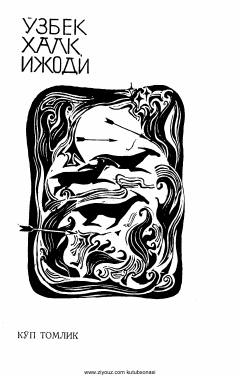

SBO'zbek xalq og'zaki ijodining sara namunasi bo'lgan "Shirin bilan Shakar" dostoni.
Mazkur kitob o'zbek xalq og'zaki ijodiga mansub mashhur "Shirin bilan Shakar" dostonini o'z ichiga oladi. Asar taniqli baxshi Fozil Yo'ldosh o'g'li ijrosidan yozib olingan bo'lib, xalqona ruh va badiiy topqirlikka boy.